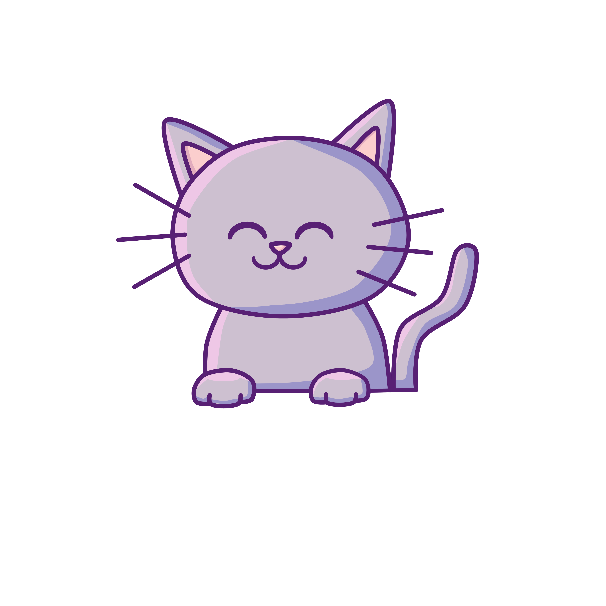

A little reminder
You don't have to do all of this.
These are gentle reminders for difficult moments. You can open just one card, read a sentence, skip anything that doesn't help, or simply stay here for a while.
01 Something is happening. It's a flashback.
Sometimes a memory can feel so real that it seems like you're back there again. But you're here, right now. This is a flashback. Something from the past is visiting you. You don't have to figure it out right now.
A big old feeling is visiting. It can feel real, but it is a memory. You're here, right now.
02 You're here, not there.
You might feel scared. That's okay. But feeling scared doesn't necessarily mean something bad is happening right now. You're here, in the present. The past is not happening again.
You're here, little one. That was then. This is now. Let's look around at where you are.
03 You can say no.
Your body belongs to you. You don't have to stay where someone is hurting you. You can move away, say no, ask for help or protect your space. You are allowed to have boundaries.
Your body is yours. You can say no. You can move away. You are allowed to have boundaries.
04 Be gentle with your little self.
There's a little part of you that feels very scared right now. You don't have to tell it to stop crying or be brave. You can tell it: “I'm here, sweetheart. I won't be angry with you. You can be little, you can cry, and you can need cuddles. I'll take care of us.”
Oh, sweetheart. You don't have to be brave right now. You can cry. You can need cuddles. I'm here with you.
05 This feeling won't last forever.
Sometimes a scary feeling makes it seem like things will always be this way. But feelings change. Even very big feelings become smaller eventually. You don't have to make everything better right now. Just stay with yourself, one little moment at a time.
This feeling is big, but it won't stay this big forever. One little moment at a time.
06 You're bigger now.
You're bigger now. You have choices, people who can help, and ways to protect yourself. You don't have to handle everything alone.
You're not alone with this anymore. Grown-up you is here, too. You have choices now.
07 Let's help your body rest.
Your body might still feel tense or frightened. Let's not rush it. Unclench your jaw, if you can. Let your shoulders rest. Take a gentle breath. No need to breathe deeply. Find somewhere comfortable to sit or lie down. Wrap yourself in a blanket. Hold your favourite plushie. You don't have to do all of these. One little thing is enough.
Let's get cosy. Maybe a blanket? Maybe your favourite plushie? You can just get comfy. No need to do everything.
08 You don't deserve unkindness.
Sometimes a mean little voice inside tells you that everything is your fault. You don't have to believe it. You are not bad for being scared, upset, tired or overwhelmed. You deserve kindness, even when things go wrong.
You're not bad. Not for crying. Not for being scared. Not for needing help. You deserve kindness.
09 It's okay to cry.
You might feel sad about things that happened a long time ago. You might cry, feel angry or wish someone had protected you. Those feelings deserve space. You don't have to hide your tears. You can be gentle with yourself while they come.
It's okay, sweetheart. Tears are allowed. You don't have to hide them.
10 You deserve safe company.
You don't have to be alone with everything. If there's someone you trust, you can ask them to stay with you. You don't even need to explain everything. You can simply say: “I'm having a difficult moment. Could you sit with me for a while?”
You can ask someone kind to stay. You don't have to explain. Just having company is enough.
11 Notice what feels overwhelming.
Sometimes certain sounds, places, people, words or situations bring back old feelings. It's not your fault. When you can, give yourself a little more space from things that hurt or overwhelm you. You deserve to feel comfortable.
Some things can feel too loud or too much. That's not your fault. You can take a little break.
12 Listen to what you need.
Maybe you needed someone to comfort you. Maybe you needed protection, patience, kindness or someone who would listen. Those needs were never silly or wrong. You can start giving yourself some of that care now. And you can let safe people help, too.
What do you need, little one? A cuddle? Some rest? Someone to listen? Your needs are important.
13 Healing takes time, little one.
You don't have to get better all at once. Some days will be easier. Some days might be difficult again. That doesn't mean you've failed or lost all your progress. You are learning to feel safer, little by little. Please don't be angry with yourself for having a difficult day.
Getting better takes time. Difficult days don't mean you've failed. You're learning, little by little. I'm proud of you for being here.